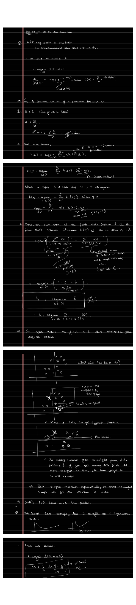

Boosting & AdaBoost
Whereas bagging trains deep trees independently in parallel to average out variance, boosting builds a sequence of simple weak learners where each new model corrects the errors of the ensemble built so far. This companion connects the handwritten scan's additive update rule to a complete three-round AdaBoost calculation with exact fractions and logarithms.
Keep the old model and add a scaled correction
Denote the ensemble score after round $t-1$ by $H_{t-1}(x)$, the new weak learner at round $t$ by $h_t(x)$, and its step weight by $\alpha_t \in \mathbb R$. Forward stagewise additive modeling updates the score without re-fitting earlier learners:
For half squared-error regression $L\bigl(y_i, H(x_i)\bigr) = \frac{1}{2}\bigl(y_i - H(x_i)\bigr)^2$, the negative derivative with respect to row $i$'s current prediction $H_{t-1}(x_i)$ is the ordinary residual $r_{it} = y_i - H_{t-1}(x_i)$. Fitting a small regression tree to those residuals and adding $\eta\,h_t(x)$ yields gradient-boosted regression trees; see the functional gradient descent derivation and Gradient Boosting notes.
AdaBoost: exponential loss turns into sample reweighting
For binary classification with labels $y_i \in \{-1, +1\}$ and weak classifiers $h_t(x_i) \in \{-1, +1\}$, AdaBoost minimizes exponential loss $\sum_{i=1}^n \exp\bigl(-y_i H_t(x_i)\bigr)$ one round at a time. Let $w_i^{(t)} > 0$ be the normalized sample weights entering round $t$ ($\sum_{i=1}^n w_i^{(t)} = 1$, initialized at $w_i^{(1)} = 1/n$). Defining the weighted classification error
minimizes exponential loss with respect to $\alpha_t$ whenever $0 < \varepsilon_t < 1/2$. Notice the signed margin indicator $y_i h_t(x_i)$: it equals $+1$ when $h_t$ classifies row $i$ correctly and $-1$ when $h_t$ misses row $i$. Updating and renormalizing the weights gives
Substituting $e^{\alpha_t} = \sqrt{(1-\varepsilon_t)/\varepsilon_t}$ reveals a clean symmetry: after normalization by $Z_t$, the correctly classified rows share total weight $\frac{1}{2}$ ($w_i^{(t)} / [2(1-\varepsilon_t)]$) and the misclassified rows also share total weight $\frac{1}{2}$ ($w_i^{(t)} / [2\varepsilon_t]$), guaranteeing that a weak learner cannot earn better than $50\%$ error on the next round merely by repeating $h_t$.
Complete 9-point dataset and all three AdaBoost rounds
Consider $n = 9$ ordered points $x_i = 1, 2, \dots, 9$ partitioned into three contiguous blocks of three: Left block $L = \{1, 2, 3\}$ with $y_i = -1$, Middle bump $M = \{4, 5, 6\}$ with $y_i = +1$, and Right block $R = \{7, 8, 9\}$ with $y_i = -1$. No single threshold stump $h(x) = \pm\operatorname{sign}(x - \tau)$ can isolate the middle $+1$ bump without misclassifying either $L$ or $R$.
Under uniform initial weights $w_i^{(1)} = 1/9$, four candidate stumps tie for the lowest weighted error $\varepsilon_1 = 3/9 = 1/3$: the constant stump $h_1(x) = -1$ (threshold $\tau = 0$, polarity $-1$, selected first in a left-to-right scan), $x > 3.5 \to +1$, $x > 6.5 \to -1$, and $x > 10 \to -1$. Tracing the deterministic scan across all three rounds exposes every exact weight, $Z_t$, and vote:
| Round & Stump Rule | Block ($3$ pts) | Entering $w_i^{(t)}$ | $h_t(x_i)$ & $y_i h_t$ | Unnormalized $\tilde w_i^{(t+1)}$ | Normalized $w_i^{(t+1)}$ |
|---|---|---|---|---|---|
|
Round 1 $h_1(x) = -1$ ($\tau=0$, pol $-1$) $\varepsilon_1 = \frac{1}{3}$ $\alpha_1 = \frac{1}{2}\ln 2 \approx 0.3466$ $Z_1 = \frac{2\sqrt{2}}{3} \approx 0.9428$ |
$L=\{1,2,3\}$ ($y=-1$) | $\frac{1}{9} \approx 0.1111$ | $-1$ ($+1$, hit) | $\frac{1}{9\sqrt{2}} \approx 0.0786$ | $\frac{1}{12} \approx 0.0833$ |
| $M=\{4,5,6\}$ ($y=+1$) | $\frac{1}{9} \approx 0.1111$ | $-1$ ($-1$, miss) | $\frac{\sqrt{2}}{9} \approx 0.1571$ | $\frac{1}{6} \approx 0.1667$ | |
| $R=\{7,8,9\}$ ($y=-1$) | $\frac{1}{9} \approx 0.1111$ | $-1$ ($+1$, hit) | $\frac{1}{9\sqrt{2}} \approx 0.0786$ | $\frac{1}{12} \approx 0.0833$ | |
|
Round 2 $h_2(x) = +1$ if $x > 3.5$ else $-1$ $\varepsilon_2 = 3\cdot\frac{1}{12} = \frac{1}{4}$ $\alpha_2 = \frac{1}{2}\ln 3 \approx 0.5493$ $Z_2 = \frac{\sqrt{3}}{2} \approx 0.8660$ |
$L=\{1,2,3\}$ ($y=-1$) | $\frac{1}{12} \approx 0.0833$ | $-1$ ($+1$, hit) | $\frac{1}{12\sqrt{3}} \approx 0.0481$ | $\frac{1}{18} \approx 0.0556$ |
| $M=\{4,5,6\}$ ($y=+1$) | $\frac{1}{6} \approx 0.1667$ | $+1$ ($+1$, hit) | $\frac{1}{6\sqrt{3}} \approx 0.0962$ | $\frac{1}{9} \approx 0.1111$ | |
| $R=\{7,8,9\}$ ($y=-1$) | $\frac{1}{12} \approx 0.0833$ | $+1$ ($-1$, miss) | $\frac{\sqrt{3}}{12} \approx 0.1443$ | $\frac{1}{6} \approx 0.1667$ | |
|
Round 3 $h_3(x) = -1$ if $x > 6.5$ else $+1$ $\varepsilon_3 = 3\cdot\frac{1}{18} = \frac{1}{6}$ $\alpha_3 = \frac{1}{2}\ln 5 \approx 0.8047$ $Z_3 = \frac{\sqrt{5}}{3} \approx 0.7454$ |
$L=\{1,2,3\}$ ($y=-1$) | $\frac{1}{18} \approx 0.0556$ | $+1$ ($-1$, miss) | $\frac{\sqrt{5}}{18} \approx 0.1242$ | $\frac{1}{6} \approx 0.1667$ |
| $M=\{4,5,6\}$ ($y=+1$) | $\frac{1}{9} \approx 0.1111$ | $+1$ ($+1$, hit) | $\frac{1}{9\sqrt{5}} \approx 0.0497$ | $\frac{1}{15} \approx 0.0667$ | |
| $R=\{7,8,9\}$ ($y=-1$) | $\frac{1}{6} \approx 0.1667$ | $-1$ ($+1$, hit) | $\frac{1}{6\sqrt{5}} \approx 0.0745$ | $\frac{1}{10} = 0.1000$ |
Why Round 3 achieves zero ensemble error despite $\varepsilon_3 = 1/6 > 0$
Look closely at Round 3: the individual weak learner $h_3(x)$ is still wrong on all three points in the left block $L = \{1, 2, 3\}$, incurring weighted error $\varepsilon_3 = 3 \times \frac{1}{18} = \frac{1}{6} > 0$. How can adding an imperfect learner produce zero training mistakes across all nine points?
Because the final classifier predicts $\operatorname{sign}\bigl(H_3(x)\bigr) = \operatorname{sign}\bigl(\alpha_1 h_1(x) + \alpha_2 h_2(x) + \alpha_3 h_3(x)\bigr)$, each block is decided by a weighted committee vote across all three rounds:
- Left block $L = \{1,2,3\}$ ($y = -1$): $h_3$ votes $+1$ (wrong), but both $h_1$ and $h_2$ voted $-1$ (right). Since $\alpha_1 + \alpha_2 = \frac{1}{2}\ln 2 + \frac{1}{2}\ln 3 = \frac{1}{2}\ln 6$ strictly exceeds $\alpha_3 = \frac{1}{2}\ln 5$, the first two rounds outvote Round 3's mistake: $$H_3(L) = -\frac{1}{2}\ln 2 - \frac{1}{2}\ln 3 + \frac{1}{2}\ln 5 = \frac{1}{2}\ln\!\left(\frac{5}{6}\right) \approx -0.0912 < 0 \implies \hat y = -1.$$
- Middle block $M = \{4,5,6\}$ ($y = +1$): $h_1$ voted $-1$, while both $h_2$ and $h_3$ voted $+1$: $$H_3(M) = -\frac{1}{2}\ln 2 + \frac{1}{2}\ln 3 + \frac{1}{2}\ln 5 = \frac{1}{2}\ln\!\left(\frac{15}{2}\right) \approx +1.0075 > 0 \implies \hat y = +1.$$
- Right block $R = \{7,8,9\}$ ($y = -1$): $h_2$ voted $+1$, while both $h_1$ and $h_3$ voted $-1$: $$H_3(R) = -\frac{1}{2}\ln 2 + \frac{1}{2}\ln 3 - \frac{1}{2}\ln 5 = \frac{1}{2}\ln\!\left(\frac{3}{10}\right) \approx -0.6020 < 0 \implies \hat y = -1.$$
Every block is wrong in at most one round, and in every case the two correct rounds carry greater combined vote weight than the lone erring round.
Orange circles are $y_i = -1$; green circles are $y_i = +1$. Red outlines mark points missed by the current round's stump $h_t$.
Boundary cases and the training-error guarantee
Check three boundary cases in code: if $\varepsilon_t = 0$, a single weak learner already classifies the weighted sample perfectly (cap $\alpha_t$ or return early to avoid $\ln(\infty)$); if $\varepsilon_t = 1/2$, $\alpha_t = 0$ provides zero progress; if $\varepsilon_t > 1/2$ for a binary classifier, negating $-h_t$ flips its error to $1 - \varepsilon_t < 1/2$.
By telescoping the normalization factors, average training exponential loss equals the product $\frac{1}{n}\sum_{i=1}^n e^{-y_i H_T(x_i)} = \prod_{t=1}^T Z_t$. Here $Z_1 Z_2 Z_3 = \frac{2\sqrt{2}}{3}\cdot\frac{\sqrt{3}}{2}\cdot\frac{\sqrt{5}}{3} = \frac{\sqrt{30}}{9} \approx 0.6086 < 1$, bounding 0–1 training error below $\exp(-2\sum_{t=1}^T \gamma_t^2)$ where $\gamma_t = \frac{1}{2} - \varepsilon_t$ (see the full AdaBoost proof). Keep this training bound separate from generalization: noisy or mislabeled rows are missed repeatedly and accumulate exponentially growing weights unless tree depth and round count $T$ are regularized via validation.


Verify all three AdaBoost rounds and telescoping Z product in Python
import math
X = [1, 2, 3, 4, 5, 6, 7, 8, 9]
Y = [-1, -1, -1, 1, 1, 1, -1, -1, -1]
n = len(X)
w = [1 / n] * n
H = [0.0] * n
Z_prod = 1.0
for t in range(1, 4):
cands = []
for ti in range(n + 1):
thr = X[0] - 1 if ti == 0 else (X[-1] + 1 if ti == n else 0.5 * (X[ti - 1] + X[ti]))
for pol in [1, -1]:
pred = [pol if x > thr else -pol for x in X]
err = sum(w[i] for i in range(n) if pred[i] != Y[i])
cands.append((err, thr, pol, pred))
eps, thr, pol, pred = min(cands, key=lambda c: round(c[0], 12))
alpha = 0.5 * math.log((1 - eps) / eps)
unnorm = [w[i] * math.exp(-alpha * Y[i] * pred[i]) for i in range(n)]
Z = sum(unnorm)
Z_prod *= Z
w = [u / Z for u in unnorm]
H = [H[i] + alpha * pred[i] for i in range(n)]
mistakes = sum(1 for i in range(n) if (1 if H[i] > 0 else -1) != Y[i])
print(f"Round {t}: thr={thr}, pol={pol:+d}, eps={eps:.6f}, alpha={alpha:.6f}, Z={Z:.6f}, mistakes={mistakes}/9")
emp_exp_loss = sum(math.exp(-Y[i] * H[i]) for i in range(n)) / n
print(f"H(L), H(M), H(R) = {H[0]:.6f}, {H[3]:.6f}, {H[6]:.6f}")
print(f"Z1*Z2*Z3 = {Z_prod:.8f} == empirical exp loss = {emp_exp_loss:.8f}")Continue with the Boosting series overview and Gradient Boosting notes for general differentiable losses and regularized leaf updates.
Sources and next steps
- Cornell CS 4780: Boosting — Lecture connection between additive models and exponential loss minimization.
- Schapire (2003): The Boosting Approach to Machine Learning — Exact weight updates, margin theory, and training-error bounds.